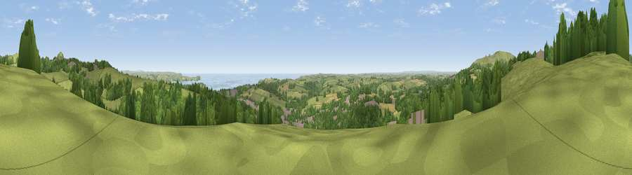

Viewpoint near St Austell
#1725 in England · top 3% of its area beats it · near St AustellWhere it is
The exact computed spot (SX 00800 53550). Click the marker for map links.
The view, rendered

A 360° render of this exact spot computed from the terrain model, tree cover and land cover — summer colours, afternoon light, calibrated against photographs of famous viewpoints. Real trees, hedges and buildings will differ in detail.
The panorama
Grey silhouette: terrain skyline in each direction (720 bearings, Earth curvature and refraction included). Dashed green: skyline with trees (+15 m) and buildings (+8 m) as obstacles. Blue strip: how far the ground is visible on each bearing.
Where the view opens
Wedge length = distance to the farthest visible ground on that bearing (vegetation-aware). Rings at 10, 25 and 50 km.
What fills the view
48% grassland · 36% woodland · 6% built-up · 6% cropland · 5% water
Angular shares of the visible panorama (visual magnitude), not map area. Landscape diversity 0.52 (0–1 Shannon).
Key numbers
More beautiful places nearby
The staircase of upgrades: each row has a higher view potential than everything closer. Driving times are estimates from straight-line distance, calibrated against real road routing — check an actual route before setting out.
| Place | Direction | Drive | Score |
|---|---|---|---|
| Viewpoint near Trewoon | NW · 1 km | ~3 min | 79.7 |
| Viewpoint near Trethurgy | ENE · 2 km | ~5 min | 79.8 |
| Great Treverbyn Tip | NNE · 2 km | ~6 min | 82.0 |
| Viewpoint near Trethurgy | NE · 3 km | ~7 min | 84.1 |
| Viewpoint near Foxhole | W · 3 km | ~8 min | 84.3 |
| Viewpoint near Foxhole | W · 3 km | ~8 min | 86.4 |
| Viewpoint near Stenalees | N · 4 km | ~9 min | 88.0 |
| Viewpoint near Crackington Haven | NNE · 42 km | ~62 min | 88.1 |
50.34809, -4.80126 · source: screening · position refined by local search. Computed location — check access rights before visiting.